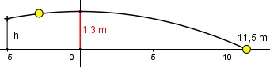

Aufgabe 143 Ein Tennisplatz ist 24 m lang. Ein Spieler trifft einen Ball 5 m vor dem Netz, der Ball überquert auf einer parabelförmigen Bahn in maximaler Höhe von 1,3 m das Netz und trifft 0,5 m vor der Grundlinie auf. In welcher Höhe hat der Spieler den Ball getroffen? Der Ball bewegt sich auf einer Parabel der Form y = a(x - xS)2 + yS  Punktkoordinaten aus der Aufgabenstellung: Auftreffpunkt P1(11,5|0), Scheitelpunkt PS(0|1,3) x = 11,5, y = 0, xS = 0, yS = 1,3 Eingesetzt : 0 = a (11,5 - 0)2 + 1,3 0 = 132,25a + 1,3 |-1,3 - 1,3 = 132,25a | :132,25 a = - 0,01 y = - 0,01x2 + 1,3 Eingesetzt x = - 5 (Treffpunkt des Balles 5 m vor dem Netz) y = - 0,01 * 52 + 1,3 y = 1,05 m In dieser Höhe wird der Ball getroffen.